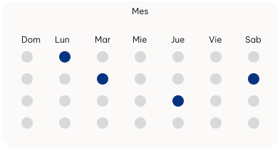

Dra. Amalia Gomez
DermatólogoEgresada de la Universidad de Nacional de Rosario - Argentina. Especializada en Medicina General y Familiar - Colegio de médicos de Rosario - 2da Circunscripción - Argentina Especialización en Dermatología - Universidad Nacional de Rosario - Argentina.
Experiencia
- Criocirugía Dermatológica
- Dermatología Pediátrica
- Dermatología Clínica
Direcciones
- San Jerónimo Sud
- San Lorenzo
Obras sociales aceptadas en esta dirección:
- Pacientes privados (sin obra social)
- Swiss Medical
- Galeno + 25 ver más
